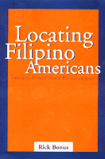

<body bgcolor="#FFFFFF" text="#000000" link="#0000FF" vlink="#CC0000" alink="#CC0000"><center><hr width="350" size="1" align="center" noshade>Defining ethnic identity and social space for Filipino Americans<hr width="350" size="1" align="center" noshade><p><a href="https://cdcshoppingcart.uchicago.edu/Cart/ChicagoBook.aspx?ISBN=9781566397780&&PRESS=temple" target="_top">Buy this book!</a> | <a href="https://cdcshoppingcart.uchicago.edu/Cart/Cart.aspx?PRESS=temple" target="_top">View Cart</a> | <a href="https://cdcshoppingcart.uchicago.edu/Cart/Cart.aspx?PRESS=temple" target="_top">Check Out</a></p><p></p></center><!--none//--><h1>Locating Filipino Americans</h1>
<H2>Ethnicity and the Cultural Politics of Space</H2>
<h3>Rick Bonus</h3>
<P>cloth 1-56639-778-2 $75.50, Aug 00, <FONT COLOR=#990033>Available</FONT>
<br>paper 1-56639-779-0 $30.95, Aug 00, <FONT COLOR=#990033>Available</FONT>
<BR> 248 pp
6x9
3&nbsp;tables
</P><BLOCKQUOTE><I>"Bonus draws on contemporary insights of cultural studies while grounding its tendency toward idealism in a very material sense of power. His subjects are actors, not victims of narratives. He does an effective and sometimes elegant job of capturing their adjustment and resistance to being neither and both Filipino and American."</I>
<br>&#151<b>John Horton</b>, Professor Emeritus of Sociology, UCLA<I></I></BLOCKQUOTE>
<P>The Filipino American population in the U.S. is expected to reach more than two million by the next century. Yet many Filipino Americans contend that years of formal and covert exclusion from mainstream political, social, and economic institutions of the basis of their race have perpetuated racist stereotypes about them, ignored their colonial and immigration history, and prevented them from becoming fully recognized citizens of the nation. <I>Locating Filipino Americans</I> shows how Filipino Americans counter exclusion by actively engaging in alternative practices of community building.
<P><I>Locating Filipino Americans</I>, an ethnographic study of Filipino American communities in Los Angeles and San Diego, presents a multi-disciplinary cultural analysis of the relationship between ethnic identity and social space. Author Rick Bonus argues that alternative community spaces enable Filipino Americans to respond to and resist the ways in which the larger society has historically and institutionally rendered them invisible, silenced, and racialized. Bonus focuses on the "Oriental" stores, the social halls and community centers, and the community newspapers to demonstrate how ethnic identities are publicly constituted and communities are transformed. Delineating the spaces formed by diasporic consciousness, Bonus shows how community members appropriate elements from their former homeland and from their new settlements in ways defined by their critical stances against racism, homogenization, complete assimilation, and exclusionary citizenship. <I>Locating Filipino Americans</I> is one of the few books that offers a grounded approach to theoretical analyses of ethnicity and contemporary culture in the U.S.
<BR>&nbsp;<h2>Excerpt</h2><P>Excerpt available at <a href="http://www.temple.edu/tempress">www.temple.edu/tempress</a></p>
<BR>&nbsp;<h2>Reviews</h2>
<p><i>"Filipino Americans rank as the second largest Asian-American population in the USA, following Chinese Americans. This book draws from the author's ethnographic studies of Filipino-American communities in Los Angeles and San Diego,California, in the early 1990s. Bonus focuses on commercial establishments such as markets, community centers, and ethnic newspapers as sites where Filipino Americans publicly construct their ethnic identities in relation to the historical and contemporary conditions they face as members of US society. He contends that Filipino-American identity formation reflects two forces: a need to respond to and resist historical and institutional rendering of invisibility, exploitation, silencing and racial constructing, and a desire to claim 'space' within the category 'American' on their own terms."</i>
<br>&#151<b><i>SAGE Race Relations Abastracts</i></b>
<p><i>"Bonus combines oral interviews, multi-disciplinary theories, history and ethnographic fieldwork and provides sophisticated and through analyses of his findings. What is refreshing is not only the telling Taglish (i.e., a combination of Tagalog and English) responses by interviewees to his questions, but his scholarly commitment to the interviewees of the study."</i>
<br>&#151<b><i>Pacific Reader</i></b>
<p>Read a <a href="../authors/1439_review.pdf">review</a> from <I>MultiCultural Review</I>, September 2001 (pdf).
<p>Read a <a href="../authors/1439_review2.pdf">review</a> from <I>The Journal of American Ethnic History</I>, Winter 2002, written by Jon D. Cruz (pdf).
<p>Read a <a href="../authors/1439_review3.pdf">review</a> from <I>Contemporary Sociology</I>, Volume 31.1, written by Catherine Ceniza Choy (pdf).
<BR>&nbsp;<h2>Contents</h2><P>
<p>Preface
<br>Acknowledgments
<br>Introduction: Marking Locations
<br>1. Cartographies of Ethnicity
<br>2. Filipinos and Filipinas in America
<br>3. Marking and Marketing Identities in Filipino "Oriental" Stores
<br>4. <I>Palengke</I> Politics and Beauty Pageants in Filipino Community Centers
<br>5. Homeland Memories and Media: Filipino Images and Imaginations in America
<br>Conclusion: Re-marking Locations
<br>Notes
<br>Index
</P><BR>&nbsp;<H2>About the Author(s)</H2>
<table><tr><td valign="top"><img src="/tempress/authors/1439_au.gif" height="90" width="75"></td><td width="100%" valign="middle"><p><B>Rick Bonus</B> is Assistant Professor of American Ethnic Studies at the University of Washington, Seattle. He has also edited <I><A HREF="1595_reg.html" TARGET="_top">Contemporary Asian American Communities: Intersections and Divergences</A></I> with Linda Trinh V� (Temple).</P></td></tr></table>
<BR><H2>Subject Categories</H2>
<p><A HREF="/tempress/asian_amer.html" TARGET="_top">Asian American Studies</a>
<BR><A HREF="/tempress/sociology.html" TARGET="_top">Sociology</a>
<BR><A HREF="/tempress/race.html" TARGET="_top">Race and Ethnicity</a>
</p>
<BR><h2 class="inpageheading">In the series</H2>
<P><I><a href="http://www.temple.edu/tempress/asam_history.html" onMouseOver="window.status='Click for other books in this series!'; return true;" onMouseOut="window.status=''; return true;" target="_top">Asian American History and Culture</a></i>, edited by K. Scott Wong, Linda Trinh V�, and Cathy Schlund-Vials.
</p><p>Founded by Sucheng Chan in 1991, the <I>Asian American History and Culture</I>, series has sponsored innovative scholarship that has redefined, expanded, and advanced the field of Asian American studies while strengthening its links to related areas of scholarly inquiry and engaged critique. Like the field from which it emerged, the series remains rooted in the social sciences and humanities, encompassing multiple regions, formations, communities, and identities. Extending the vision of founding editor Sucheng Chan and emeriti editor Michael Omi and David Palumbo-Liu, series editors K. Scott Wong, Linda Trinh V�, and Cathy Schlund-Vials continue to develop a foundational collection that embodies a range of theoretical and methodological approaches to Asian American studies.</p>
<p align="center"><a href="https://cdcshoppingcart.uchicago.edu/Cart/ChicagoBook.aspx?ISBN=9781566397780&&PRESS=temple" target="_top">Buy this book!</a> | <a href="https://cdcshoppingcart.uchicago.edu/Cart/Cart.aspx?PRESS=temple" target="_top">View Cart</a> | <a href="https://cdcshoppingcart.uchicago.edu/Cart/Cart.aspx?PRESS=temple" target="_top">Check Out</a></p><p><font face="Arial" size="1"><a href="copyright.html" onMouseOver="window.status='Web Copyright Policy';return true;" onMouseOut="window.status=''" title="Web Copyright Policy">&copy;</a> 2015 <a href="http://www.temple.edu" target="new" onMouseOver="window.status='Link to Temple University home page';return true;" onMouseOut="window.status=''" title="Link to Temple University home page">Temple University</a>. All Rights Reserved. http://www.temple.edu/tempress/titles/1439_reg.html</font></p>